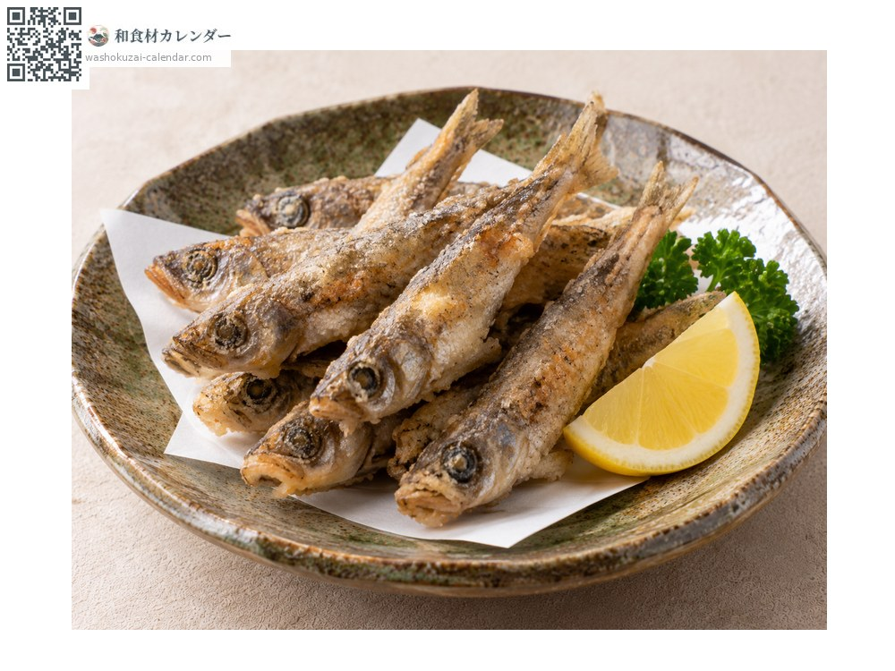
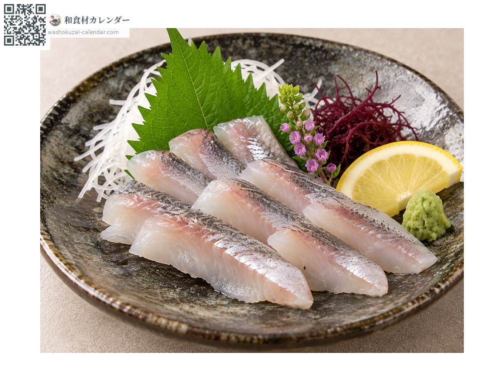
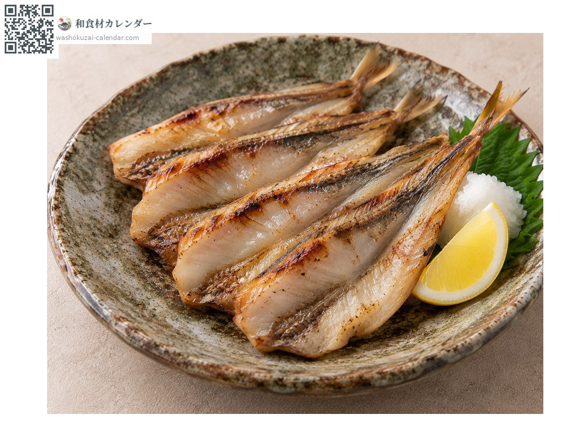
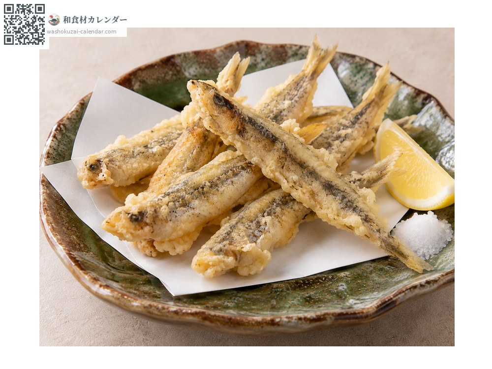

魚介
メヒカリ
めひかり
別名・別表記目光、アオメエソ、mehikari、aomeeso
旬は1月・2月・11月・12月

旬の時期
1月
2月
3月
4月
5月
6月
7月
8月
9月
10月
11月
12月
旬出回り
調理法

唐揚げ
丸ごと揚げる。骨まで食べられ、脂の甘みが立つ。

刺身
鮮度が良ければ。白身だが脂が濃く、とろりとする。

干物
一夜干しにして焼く。旨みが凝縮する。

天ぷら
衣をつけて揚げる。身がふっくらする。
選び方
目が大きく青く澄んでいるもの。体に張りがあり銀色に輝くもの。
保存方法
脂が多く傷みやすい。内臓を取って冷蔵し、当日から翌日には使い切る。
主な産地
豆知識
標準和名はアオメエソ。目が大きく青緑色に光ることが名の由来で、水深200から600メートルの深海に生息する。かつては雑魚とされたが、脂の乗りと食べやすさから福島のいわきや宮崎の延岡で特産として売り出された。